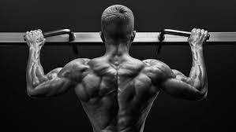
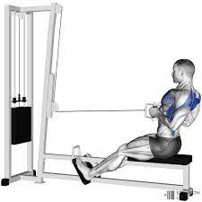
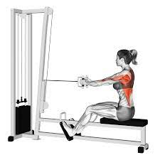
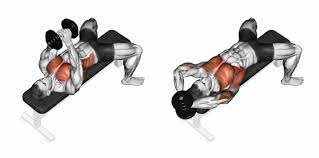
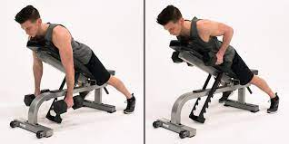

- Pull Up

Muscles worked
- forearms
- pectoralis major
- latissimus dorsi
- obliques
Equipment needed
Steps
- Exhale while pulling yourself up so your chin is level with the bar. Pause at the top.
- Lower yourself (inhaling as you go down) until your elbows are straight.
- Repeat the movement without touching the floor.
- Complete the number of repetitions your workout requires.
- Repeat.
- Seated row


Why it’s on the list: Seated rows keep your muscles under tension throughout the entire exercise, helping to build a strong back.
Muscles worked: This exercise is great for targeting your latissimus dorsi and rhomboids. It will also target other muscles, such as the trapezius and biceps.
Directions
- Adjust the cable row seat so that the handles are at chest height.
- Sit up straight and place your feet flat on the floor or on the foot supports.
- Grab the handles and hold them in front of you with your arms extended.
- Pull the handles toward your chest by squeezing your shoulder blades and drawing your elbows back. Keep your elbows close to your body.
- Return to the starting position with slow, controlled movement.
- Perform 1–3 sets of 8–12 reps.
- Dumbbell pullover

Why it’s on the list: This advanced move is great for those looking for an extra challenge to strengthen their back and chest. It’s also a great way to improve shoulder mobility.
Because of the move’s difficulty, it’s best to use lighter dumbbells and perfect your form. Using weights that are too heavy can increase your risk of injury and prevent you from performing the exercise correctly.
Muscles worked: The dumbbell pullover targets both the chest muscles and the latissimus dorsi.
Directions
- Select two lightweight dumbbells (it’s best to start with lighter weights to ensure correct form and maximize range of motion).
- Lie faceup on an exercise bench with your feet flat on the floor and a dumbbell in each hand resting against your chest.
- Engage your core and extend your arms up toward the ceiling in front of your chest. Keep the dumbbells close to one another, elbows slightly bent, and palms facing inward. This is the starting position.
- Slowly extend your arms back to bring the dumbbells back and over your head. Avoid going farther than your ears, keeping your arms visible out of the corner of your eye. Ensure your ribs remain in contact with the bench
- Pause, and then slowly bring the dumbbells back to the starting position.
- Perform 1–3 sets of 8–12 reps.
- Chest-supported row

Why it’s on the list: Another great variation of the row is the chest-supported row. By leaning against a bench, you can focus on using your lats to pull the weight back. This may also help you lift more weight.
Muscles worked: This exercise is great for targeting your latissimus dorsi and rhomboids. It will also target other muscles, such as the trapezius and biceps.
Directions
- Position an adjustable exercise bench so that the backrest is at a 45-degree angle.
- Grab a pair of dumbbells and sit on the bench with your chest is facing the backrest.
- Grab the handles and hold them in front of you with your arms extended.
- Plant your feet on the floor, engage your core, and slowly lean forward until your chest is against the backrest.
- Holding a dumbbell in each hand, extend your elbows and let your arms hang straight down. This is the starting position.
- Slowly reverse the movement to return to the starting position.
- Perform 1–3 sets of 8–12 reps.